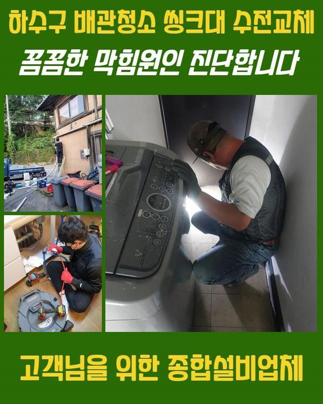
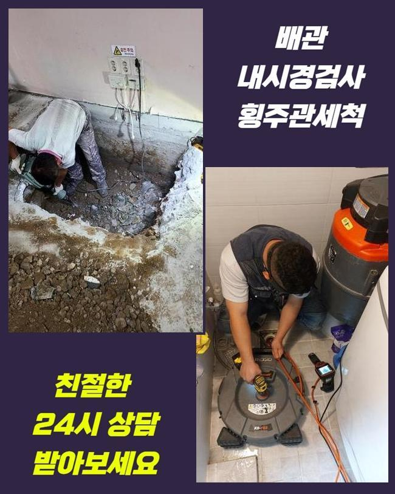
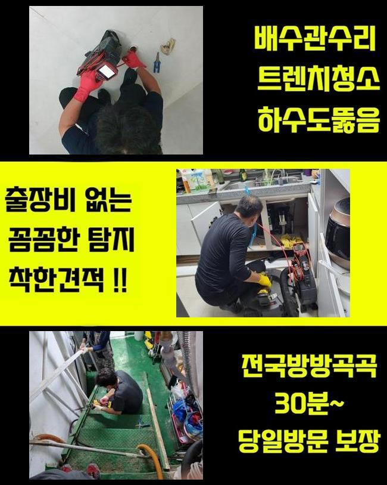
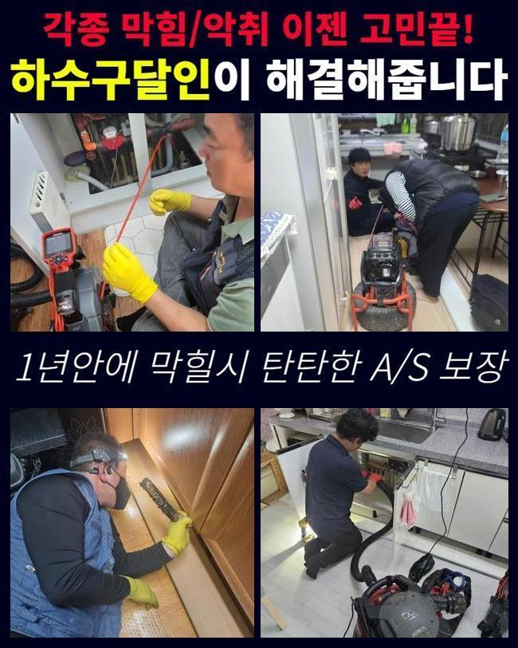
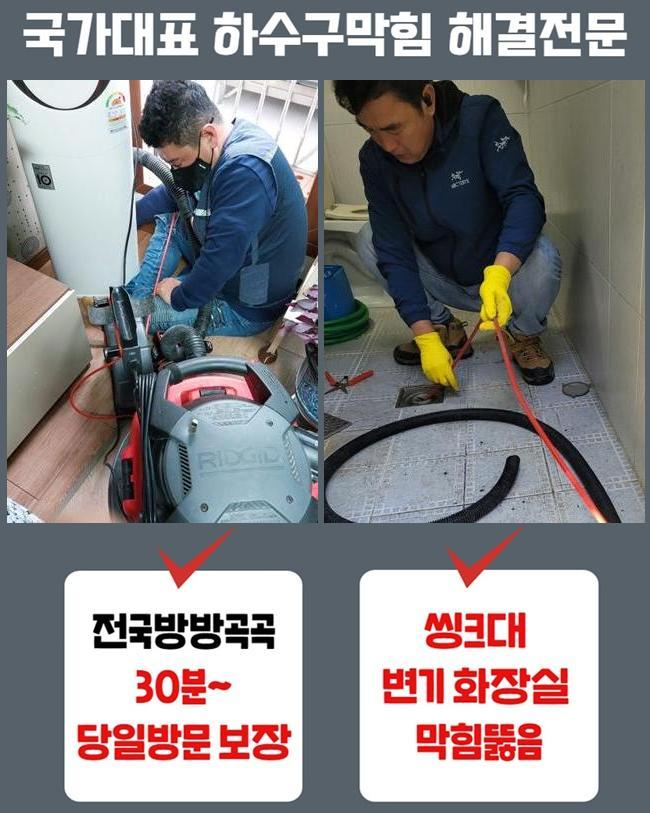
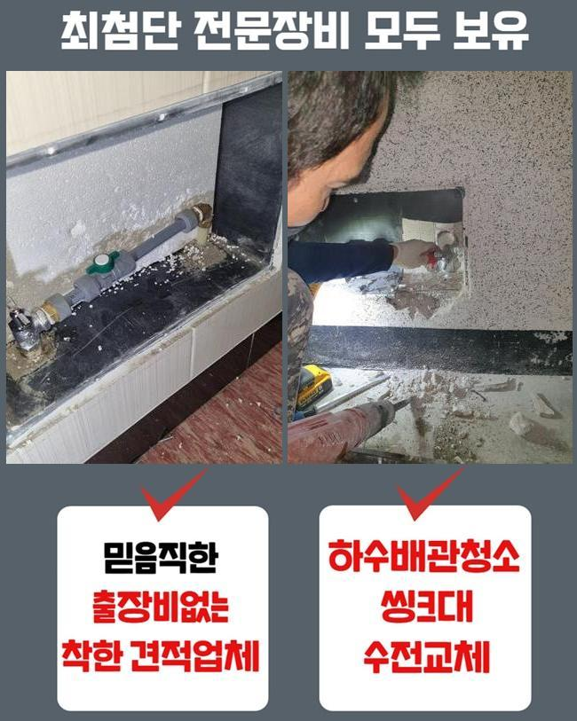
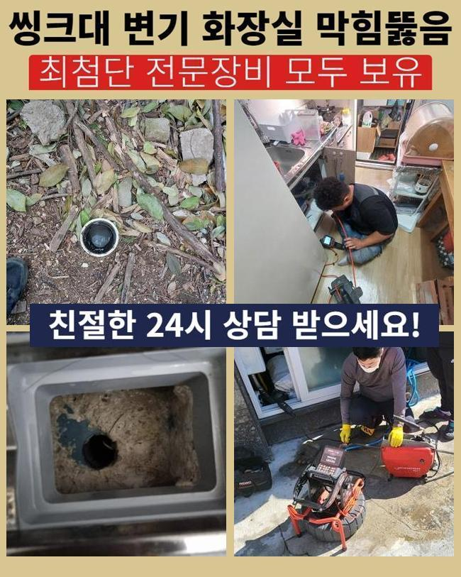

🏠 관악구 보라매동씽크대배수관막힘 조원동 하수구청소 누수공사
용인 원동 싱크대막힘 전문 시공 후기

📋 작업 개요
- 위치: 용인 원동, 원동, 용인
- 서비스 유형: 싱크대막힘, 하수구막힘, 배관막힘, 누수수리, 역류해결, 뚫는업체, 배관청소, 설비공사
- 작업 일시: 2024. 11. 16. 21:11
- 업체명: 하수구수사대 (010-5615-2118)
🔍 문제 상황
관악구 보라매동씽크대배수관막힘 조원동 하수구청소 누수공사
배관시스템이 무너졌을때 독자분들께선 무슨방법으로 대처하시나요
대다수의경우 자가조치로 시도하십니다
최근에내방한 작업사례로 하수구에대해 공개해볼게요
하수관은 사람의눈으로 파악하는것은 어렵기때문에 이물이쌓이고쌓여 막힘문제가 일어날수있답니다
이러한상황이라면 신속대처가 필요하고 역류현상도 보인다면 조심하셔야해요
막힘이 일어났을때 생활에있어 곤란함들을 일으키므로 최대한빠르게 처리해야하죠
하수관에서 막힘징조를 보셨을경우 배관수리공을 호출해서 해결하셔야 한답니다
어떤장소라도 하수구시스템이 무너지면 발생시키므로 예방하는것이 중요한부분인데요
오래도록쌓인 찌꺼기들은 쉬운방법으로 처리되지않고 무리하게 조치할경우 물이새는 경우로까지 연결될수있어요
이렇기때문에 전문기사에게 조속하게도움을 요청해야합니다

🔎 원인 분석
💡 전문가 진단: 정밀 진단 장비를 사용하여 슬러지의 고착 여부를 판명하고 타격/세척 작업을 실시했습니다.
저희업체로 의뢰주신 고객의 불편한점들을 이해하고있어 뚫어드리고자 필요한기기들을 갖춘뒤 나섰어요
화장실쪽에 막힘문제의경우 연식이오래된 상가의 노후화문제로 예상할수있었어요
화장실이막혔을때 어떤방식으로 처리하는가 알아보세요!
욕실하수구가 막혔을때 관리실로 문의해보았지만 진전이없어 문의주신것이죠
긴급내방으로 현장상태를 확인해봤을때 물을이용할때 아래쪽으로 고여버리는 현상이있었고 아래층이웃에게 물이살짝 떨어지고있는 증상까지 나타나고있었죠
이런이유는 하수구내부에 물이들어차있어 빠져나가지못하고 막혔기때문이죠
빠르게 대처해야함을 살필수있었죠
이러한경우라면 전문인의도움이 필수적이에요
석션기를사용해 잔여되어있는 물들을 제거해준후 오염물을 제거해주었죠
그치만 오염물이 즐비한 벽면부분의경우 내시경기를써서 소거하는작업을 착수해주었죠
이물이 조금이라도 잔여될경우 재차막힐수도있기에 말끔히 소거해줬어요

🔧 작업 과정
간헐적인청소와 점검해주는것이 필요할뿐아니라 막힘현상발발시 올바른 대처법으로 대처해야됩니다
다음장소로 이동하여 면밀하게 검사해보니 화장실배수구쪽에 이물이쌓인걸 파악할수있었습니다
이번장소는 굳어진오염물이 발견되었답니다
굳은이물질이 체크되었다면 분해장비로 분쇄해줘야하죠
이런식으로 현장상황을 정확히살피어 적합한장비들을 사용해줘야해요
샤프트끝쪽에 장착된 노즐이회전하며 고착물질을 분해하는 수립과정을 거쳐줍니다
석회물제거후 잔여물들은 석션기구를 활용하여 흡입해주는데요
하수도사용시 물이느리게 흘러가거나 역류증세가 발발되었다면 막힘신호를 나타내는겁니다
이런현상이 지속될경우 빠른대처를 취해야해요
막히게되었을땐 미루지않고 뚫어내야합니다
방임한다면 하수구가손상되어 누수문제로 이어질수있어 방치하는건 좋지않겠죠
이러한일을 예방하기위하여는 간헐적으로 하수구검수를 실시하는것이 좋으며 문제발견즉시 조속히 처리해야겠죠
이렇게관리하면 큰피해로 이어지는것을 예방할수있어요
씽크대배수관은 내시경장비로 배관내부를 살피고 고착물들로 인해 막혀있는것을 파악할수있었네요
이물질들을 부수기보단 용액을써서 중화과정을 거치기로 결정했어요
강력한힘을 가하여 배수관을 손상시키는걸 방지하고자 조심스레 접근했답니다
약품처리를 해준뒤 석션기를활용해 막힘현상을 처리했고 배수상태가 정상으로돌아왔죠


✅ 작업 완료
상황에적합한 방식을통해 해당현상을 효율적으로 바로잡을수있었죠
마친후에는 방지할수있는 부분들을 일러드렸어요
배관트랩이나 거름망같은것을 설치해주어 악취현상이나 막힘문제를 방지할수있다고 전달해준뒤 현장을나설수 있었는데요
저희업체는 어떤곳이든 한시간안팎으로 내방해드리고 분명하게 수립계획을 진행하고있으니 연락주세요!
이것외에도 궁금한것들이 있으실경우 시간관계없이 전화하셔서 질의하시면 친절히 상담도울게요




⚠️ 베란다 누수 및 방수 관리 방법
- ✅ 비가 많이 올 때 창틀 주변이나 아래층 천장에 얼룩이 생기는지 정기적으로 확인해 보세요.
- ✅ 우수관 주변 실리콘 마감이 들뜨거나 깨진 틈새가 있는지 손상 여부를 수시로 체크하세요.
- ✅ 베란다 바닥 타일의 줄눈(메지)이 소실되면 그 틈으로 물이 침투하여 누수가 유발됩니다.
- ✅ 누수 의심 증상 발견 시 방치하면 아래층 손실이 커지므로 즉시 전문가의 진단을 받으십시오.
💡 핵심 정리
- 확실한 장비 작업(내시경 점검 및 샤프트 스케일링)으로 원인을 뿌리 뽑습니다.
- 작업 후 1년 이내에 동일한 부위 재발 시 100% 무상 A/S 서비스를 보장합니다.
- 서울 · 경기 · 인천 전 지역에 24시간 언제든 긴급 출동할 수 있도록 항시 대기 중입니다.
❓ 자주 묻는 질문 (FAQ)
🚨 용인 원동 싱크대막힘 문제로 고민이신가요?
정확한 원인 진단과 확실한 시공으로 재발 없는 해결을 약속드립니다.
24시간 긴급 출동 | 서울 · 경기 · 인천 전지역 | 1년 내 재발 시 무상 A/S